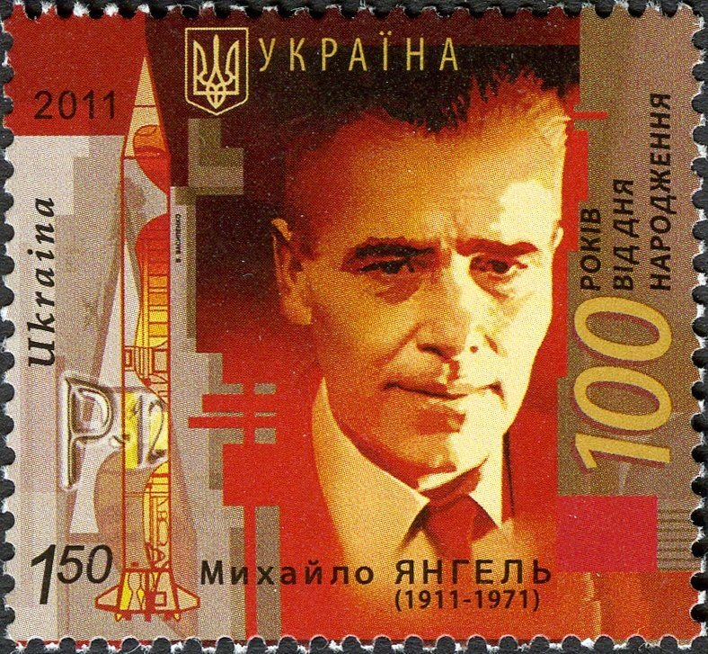

Источники изображений в тематическом слое «Фланги». В карточках применяется монохромное отображение и кадрирование.

Михаил Кузьмич Янгель
Портрет на памятной почтовой марке Укрпочты к 100-летию со дня рождения, 2011. На Wikimedia Commons изображение отмечено как общественное достояние — PD-UA-exempt.
Файл и условия использования на Wikimedia Commons.